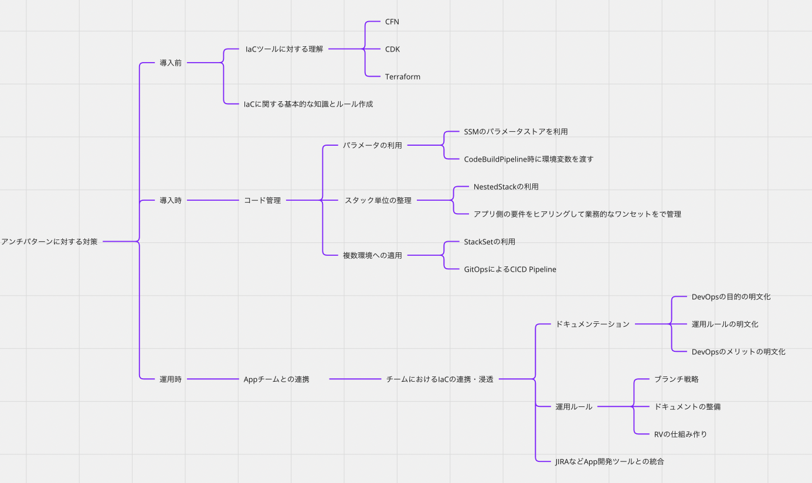

活動記録¶
10月¶
IaCの導入・運用に関する課題と対策を MIROに整理。 塾生メンバーとも課題感を議論し、それも踏まえて課題を整理しきる。
IaCの導入・運用に向けた課題の洗い出し¶
IaC導入・運用に向けた対策洗い出し¶

11月¶
DevOpsの価値の理解を深めていく¶
DevOps導入指南を読みながら価値を整理
DevOpsの価値とDevOpsを根付かせるためにはIaCや課題管理ツールの利用が重要である
テーマや流れについて整理
gitlabとjiraの利用方法をつかながら整理¶
gitlabでできること
gitlab利用した開発の基本フローを整理
改めてストーリーを考える¶
課題管理からソースコードの編集までの流れは整理できそうな雰囲気が出てきた。
改めて全体のストーリーをどうするのか
DevOpsには価値がある
DevOpsの文化醸成のためには IaCが重要
IaCの課題リストアップ
重点ピックアップ課題
業務課題とIacのソースコード修正の紐付け
Devチームが運用していくためにどのような準備をすればよいか
業務課題とIacのソースコード修正の紐付け
gitlabやjiraとの連携
運用フローの整理
Devチームが運用していくためにどのような準備をすればよいか
宣言的であるメリット
Ifによる分岐はなるべく利用しない（ロジックは除く）
CICDのPipelineは必須で準備
12月¶
ストーリー確定¶
ストーリー検討セクション参照
gitlabとjiraの利用方法をつかながら整理¶
jiraでできること
jira利用した開発の基本フローを整理
gitlabとjiraの組み合わせでできること
本格的にJIRAとgitlabのPJを連携してみる
スターターセット作成開始¶
codecommit
codebuild
codedeploy
codepipeline
S3
IAM
Mirroring User
codebuild Role
CodeDeploy Role
CodePipeline Role
スタック
Lambda-A
Lambda-B
Event-A
Event-B
Role
1月¶
スターターセット作成完成¶
デモストーリー検討¶
2月¶
運用しやすい IaCとは？¶
3月¶
発表練習